Calculos
Haciendo cálculos
Una de las grandes ventajas de tener los datos organizados en un data.frame tidy es que es posible aplicar todas las técnicas de análisis de datos tradicionales a estos datos grillados.
# Cargo los paquetes necesarios
library(magrittr)
library(ggplot2)
library(dplyr)
library(data.table)
library(metR)
# función para generar un mapa
mapa <- function(fill = "white", colour = NA) {
geom_polygon(data = map_data("world2"), aes(long, lat, group = group),
fill = fill, colour = colour, inherit.aes = FALSE, size = 0.2)
}
# Leo los datos
sst <- ReadNetCDF("datos/temperatura_mar.nc", vars = "sst")
sst$sst <- sst$sst - 273.15 # Paso a grados centígradosPor ejemplo, ¿cómo calcularías un el campo medio de temperatura de la
superficie del mar (SST)? Esencialmente es calcular el promedio de
sst para cada longitud y latitud, una operación que se
traduce de forma directa a operaciones en grupos.
data.table
sst %>%
.[, .(sst = mean(sst)), by = .(longitude, latitude)] %>%
ggplot(aes(longitude, latitude)) +
geom_contour_fill(aes(z = sst), na.fill = TRUE) +
mapa()
dplyr
sst %>%
group_by(longitude, latitude) %>%
summarise(sst = mean(sst)) %>%
ungroup() %>%
ggplot(aes(longitude, latitude)) +
geom_contour_fill(aes(z = sst), na.fill = TRUE) +
mapa() 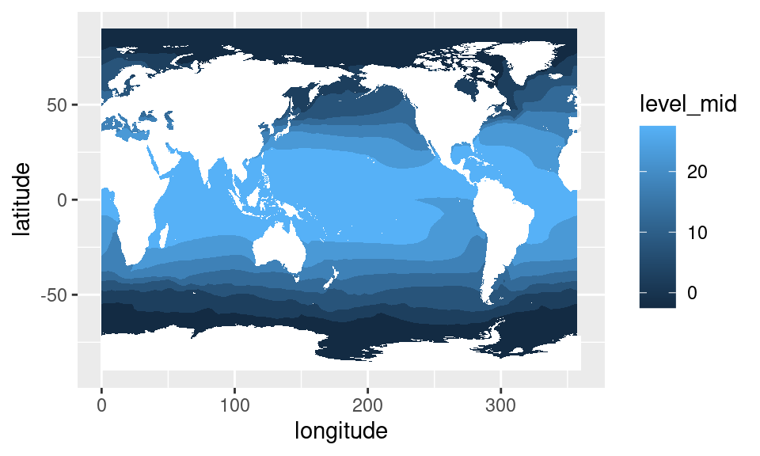
Veamos ahora series temporales te SST en distintos puntos, para tener una idea de algunas características de su variabilidad.
Definamos tres puntos que representan zonas muy disimiles del planeta:
puntos <- tibble::tribble(~longitude, ~latitude, ~ nombre,
180 , 0, "Ecuatorial",
170 , 45, "Extratropical Norte",
200 , -40, "Extratropical Sur") %>%
as.data.table()ggplot(puntos, aes(longitude, latitude)) +
geom_point() +
mapa()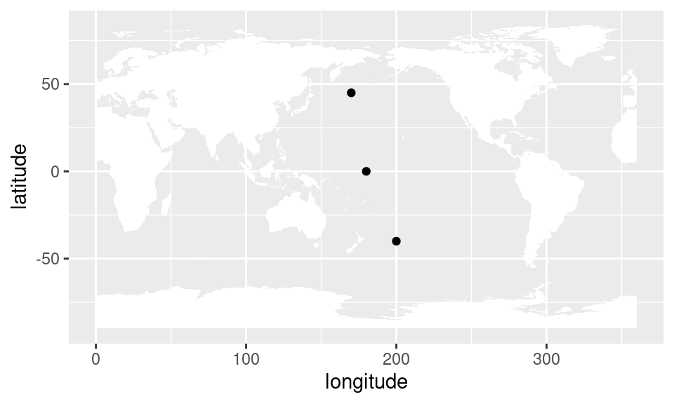
Como se ve, tenemos un punto en el Pacífico ecuatorial, otro en altas latitudes del hemisferio norte y otro en altas latitudes del hemisferio sur.
Para filtrar los datos de SST correspondientes a esos puntos, se puede hacer un join.
data.table
sst %>%
.[puntos, on = .NATURAL] %>%
ggplot(aes(time, sst)) +
geom_line()+
facet_wrap(~ nombre, scales = "free_y", ncol = 1)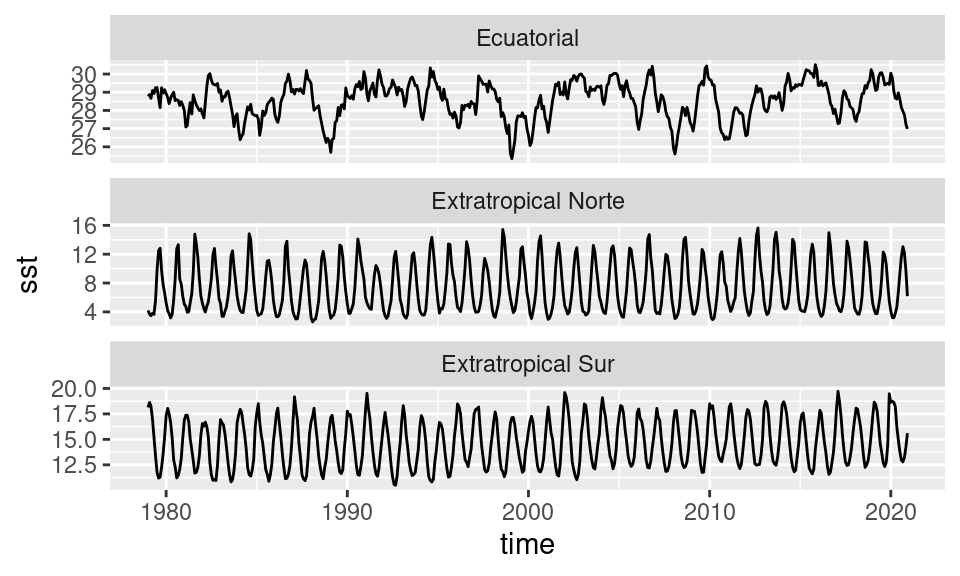
dplyr
sst %>%
right_join(puntos) %>%
ggplot(aes(time, sst)) +
geom_line()+
facet_wrap(~ longitude + latitude, scales = "free_y",
labeller = label_both, ncol = 1)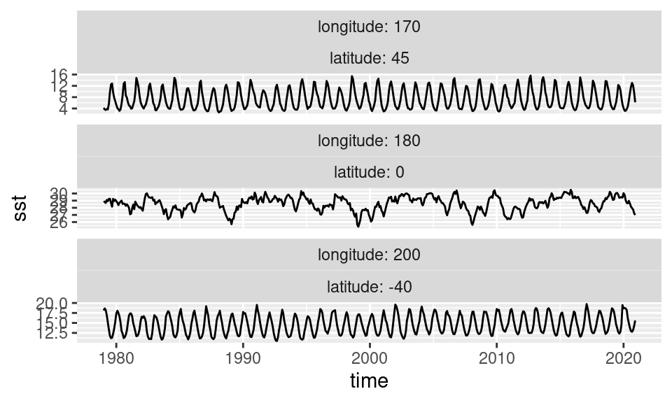
Se puede ver que las región tropical tiene una variabilidad de relativa baja frecuencia y sin un ciclo anual pronunciado. Por otro lado, en los puntos extratropicales la variabilidad más fuerte es el ciclo anual, que naturalmente se invierte entre el hemisferio norte y el hemisferio sur. Mirando la escala, se ve que la región ecuatorial varía poco más de 3 grados mientras que en las regiones extratopicales la variación es mucho mayor, del órden de 10º u 8º.
Pero el ciclo anual no es interesante, ya que es una variabilidad casi constante y predecible. Lo que es interesante es lo impredecible, lo que se aleja del ciclo anual. Para esto se calculan las anomalías: el alejamiento de los datos con respecto a el ciclo anual promedio.
Para calcular anomalías, hay que calcular el valor del dato menos el valor promedio del dato, para cada mes, y cada latitud y longitud. Nuevamente esto se traduce directamente en operaciones sobre grupos.
data.table
sst[, sst_a := sst - mean(sst), by = .(longitude, latitude, month(time))] dplyr
sst <- sst %>%
group_by(longitude, latitude, mes = month(time)) %>%
mutate(sst_a = sst - mean(sst)) %>%
ungroup() %>%
select(-mes)Ahora podemos graficar campos de anomalías en vez de de datos crudos. Por definición, las anomalías tienen media cero y lo interesante es ver cuánto se alejan de ese promedio, lo cual hacer que una escala divergente sea la elección natural para visualizarlas.
sst %>%
.[time == unique(time)[229]] %>% # elijo un mes en particular
ggplot(aes(longitude, latitude)) +
geom_contour_fill(aes(z = sst_a), na.fill = TRUE) +
mapa() +
scale_fill_divergent()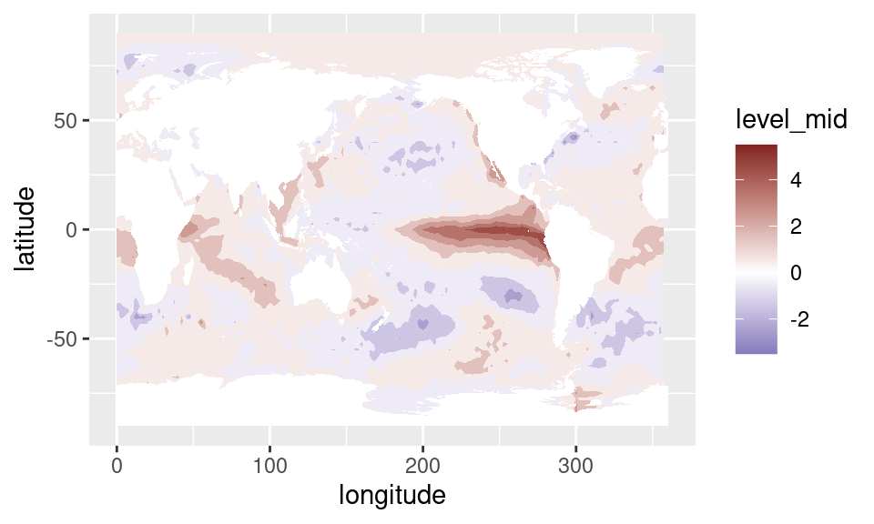
O, también, podemos ver las series temporales en los puntos que elegimos anteriormente.
sst %>%
.[puntos, on = .NATURAL] %>%
ggplot(aes(time, sst_a)) +
geom_line()+
facet_wrap(~ nombre, ncol = 1)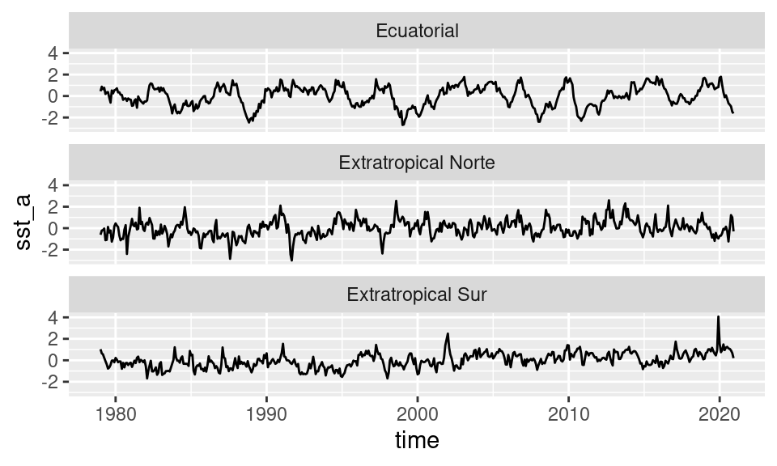
En este gráfico se puede ver que la variabilidad de la temperatura con respecto al ciclo anual es comparable en los tres puntos.
Podríamos querer cuantificar esto calculando el desvío estándar de cada punto de grilla. Igual que antes, esto se traduce en una operación por grupos: calcular el desvío por cada combinación de longitud y latitud.
data.table
sst %>%
.[, .(sd = sd(sst_a)), by = .(longitude, latitude)] %>%
ggplot(aes(longitude, latitude)) +
geom_contour_fill(aes(z = sd), na.fill = TRUE) +
mapa()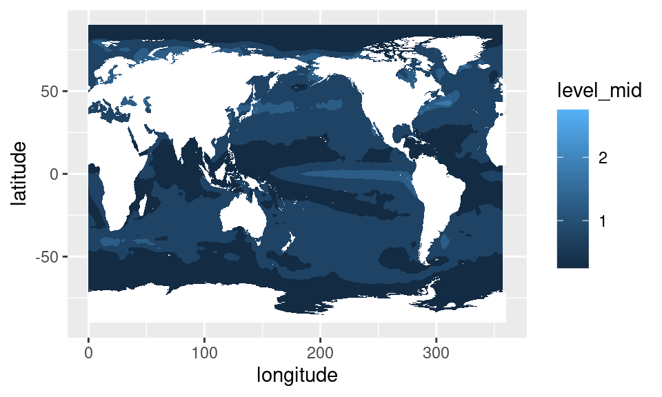
dplyr
sst %>%
group_by(longitude, latitude) %>%
summarise(sd = sd(sst_a)) %>%
ungroup() %>%
ggplot(aes(longitude, latitude)) +
geom_contour_fill(aes(z = sd), na.fill = TRUE) +
mapa() 
Acá podemos ver que hay una región del Pacífico central que tiene una variabilidad particularmente alta. Esta es la región de El Niño o ENSO, y representa una de los fenómenos climáticos de mayor influencia a nivel global.
EOF
Además de usar los mismos métodos de siempre, como
mean(), sd() y etc…, hay ciertos métodos que
son más específicos o que no se pueden traducir tan fácilmente a
operaciones simples sobre grupos.
Algunos métodos con datos grillados se prestan de forma más natural a la organización de datos grillados en forma de matriz. Análisis de Componentes Principales (también llamado Empirical Orthogonal Functions, o EOF, en ciencias de la atmósfera) es uno de ellos.
EOF es una metodología genérica que se puede aplicar a cualquier tipo de datos, pero en el contexto de los datos grillados permite computar una serie de campos cuya combinación lineal reconstruyen los datos originales. El truco es que estos campos tienen “jerarquía”: el primer campo es el que más variabilidad explica, el segundo campo, el que le sigue, y así. De esta manera, se puede analizar la variabilidad de muchísimos campos usando sólo unos pocos.
metR tiene la función EOF() que aplica componentes
principales a los datos. Su primer argumento es una fórmula que define
la estructura de la matriz de entrada a partir de los datos.
Esta fórmula tiene la forma general:
variable ~ x + y | a + b
La idea es leer esto como
“variable en función de la combinación de x e y en las filas y la combinación de a y b en las columnas”
Entonces, vamos a calcular los primeros dos EOFs del campo de anomalías de SST. Un detalle con los datos grillados es que, como están organizados en una grilla regular en longitud y latitud, los puntos en altas latitudes representan un área cada vez menor. Para corregir esto hay que pesar los datos por \(\sqrt{\cos (\mathrm{lat})}\)
data.table
eofs <- sst %>%
.[!is.na(sst_a)] %>%
.[, sst_a := sst_a*sqrt(cos(latitude*pi/180))] %>%
EOF(sst_a ~ longitude + latitude | time, n = 1:2, data = .)dplyr
eofs <- sst %>%
filter(!is.na(sst_a)) %>%
mutate(sst_a = sst_a*sqrt(cos(latitude*pi/180))) %>%
EOF(sst_a ~ longitude + latitude | time, n = 1:2, data = .)EOF() devuelve una lista de data.tables con la parte
izquierda (en este caso, espacial), derecha (en este caso, temporal) y
la varianza explicada por cada componente.
str(eofs, 1)## List of 3
## $ left :Classes 'data.table' and 'data.frame': 13832 obs. of 4 variables:
## ..- attr(*, ".internal.selfref")=<externalptr>
## $ right:Classes 'data.table' and 'data.frame': 1008 obs. of 3 variables:
## ..- attr(*, ".internal.selfref")=<externalptr>
## $ sdev :Classes 'data.table' and 'data.frame': 2 obs. of 3 variables:
## ..- attr(*, ".internal.selfref")=<externalptr>
## - attr(*, "call")= language EOF(formula = sst_a ~ longitude + latitude | time, n = 1:2, data = .)
## - attr(*, "class")= chr [1:2] "eof" "list"
## - attr(*, "suffix")= chr "PC"
## - attr(*, "value.var")= chr "sst_a"
## - attr(*, "engine")=function (x, nu = min(n, p), nv = min(n, p), LINPACK = FALSE)Si queremos ver la parte espacial, extraemos la parte izquierda:
eofs$left %>%
ggplot(aes(longitude, latitude)) +
geom_contour_fill(aes(z = sst_a)) +
mapa() +
scale_fill_divergent() +
facet_wrap(~PC, ncol = 1)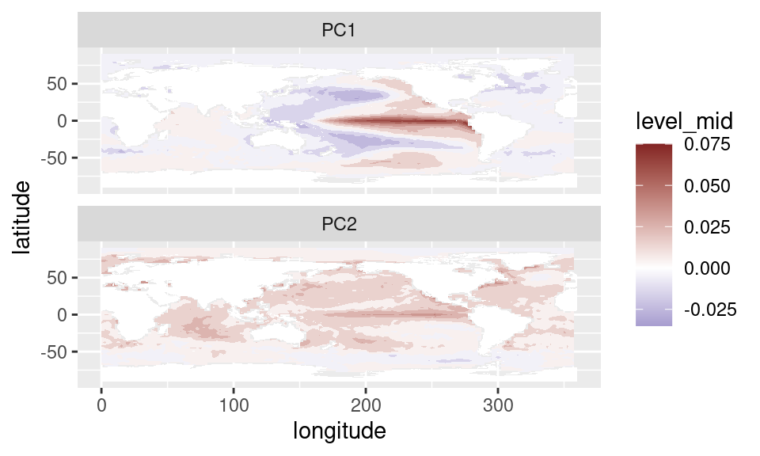
El signo de los EOFs es arbitrario y es posible que el código te devuelva campos con el signo contrario. Esto no es un problema porque la parte temporal también va a cambiar de signo y entonces la interpretación física es la misma.
Es primera componente principal nos indica que la mayor parte de la variabilidad de la temperatura del mar está asociada a cambios en la temperatura del Pacífico ecuatorial; justamente en la región del El Niño.
La segunda componente tiene anomalías cálidas relativamente homogéneas en todo el globo. Eso es, seguramente, la señal del calentamiento global.
Podemos ver cómo se comporta la parte temporal extrayendo la parte derecha.
eofs$right %>%
ggplot(aes(time, sst_a)) +
geom_line(aes(color = PC))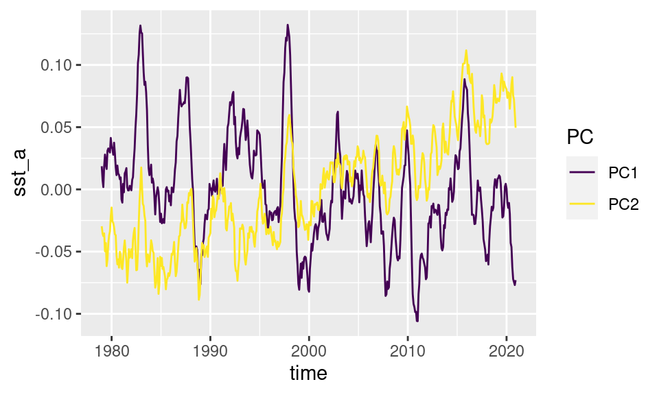
Como se ve, el PC2 tiene una tendencia positiva y valores positivos en el pasado reciente. Combinado con el campo de anomalías positivo, implica una tendencia de temperatura positiva.
El PC1 tiene una variabilidad más alta y algunos picos bien definidos (en 1983, 1997, 2015). Estos eventos donde este índice es muy positivo implican momentos en los que la superficie del mar en el Pacífico está particularmente cálida y son conocidos como eventos El Niño (los eventos contrarios son La Niña).
Una forma de calcular un índice de esta oscilación que no requiere cálculos “raros” como EOF es con el índice ENSO34, que se define como las anomalías de temperatura promedio entre 5ºS y 5ºN en la región entre 170ºO y 120ºO.
Podemos calcular este índice con nuestros datos filtrando primero los datos que están en esa caja y luego calculando el promedio para cada tiempo. Nuevamente, estas son operaciones básicas del análisis de datos tidy.
data.table
enso <- sst %>%
.[abs(latitude) < 5 & ConvertLongitude(longitude) %between% c(-170, -120)] %>%
.[, .(enso34 = mean(sst_a)), by = time]dplyr
enso <- sst %>%
filter(abs(latitude) < 5 & between(ConvertLongitude(longitude), -170, -120)) %>%
group_by(time) %>%
summarise(enso34 = mean(sst_a)) %>%
ungroup()El resultado de este índice es muy similar al EOF1 obtenido anteriormente.
ggplot(enso, aes(time, enso34)) +
geom_line() +
geom_hline(yintercept = c(-0.5, 0.5)) +
geom_line(data = eofs$right[PC == "PC1"],
aes(time, sst_a/sd(sst_a)),
color = "#a56de2")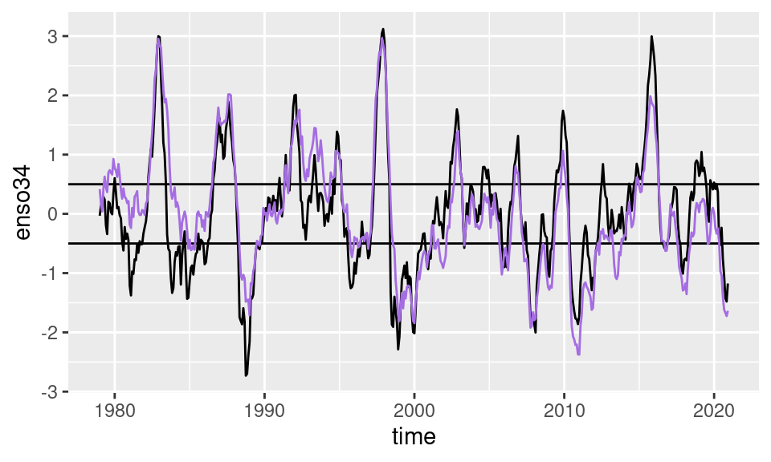
Las líneas horizontales marcan los valores de +0.5 y -0.5 que se usan tradicionalmente para definir eventos de ENSO positivos y negativos respectivamente.
Regresiones y correlaciones
Para asegurarnos de que este índice realmente representa lo que creemos que representa, podemos calcular la regresión de la SST en cada punto con este índice. Esto, es calcular la regresión lineal entre la serie temporal de SST y el índice de ENSO en cada punto de la grilla y mostrar, en colores, el valor del coeficiente. Para eso primero hay que unir los datos de SST con el índice que calculamos y luego calcular la regresión en cada punto.
Un problema acá es que lm() es muy lento principalmente
porque se toma mucho tiempo tratando de entender la fórmula que es el
primer argumento. Para acelerar las cosas, metR tiene la función
FitLm() que sirve para calcular los coeficientes de
regresiones lineales mucho más rápido.
data.table
sst %>%
.[enso, on = "time"] %>%
.[, FitLm(sst_a, enso34), by = .(longitude, latitude)] %>%
.[term != "(Intercept)"] %>%
ggplot(aes(longitude, latitude)) +
geom_contour_fill(aes(z = estimate), na.fill = 0) +
mapa() +
scale_fill_divergent()
dplyr
sst %>%
right_join(enso, by = "time") %>%
group_by(latitude, longitude) %>%
summarise(as.data.frame(FitLm(sst_a, enso34))) %>%
ungroup() %>%
filter(term != "(Intercept)") %>%
ggplot(aes(longitude, latitude)) +
geom_contour_fill(aes(z = estimate), na.fill = 0) +
mapa() +
scale_fill_divergent()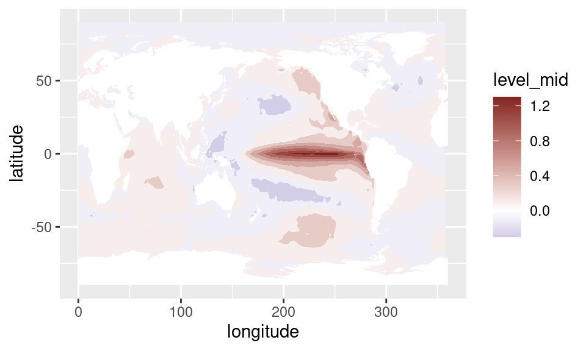
Se puede ver que este patrón es muy similar al obtenido mediante EOF.
Lo mismo pondemos hacer si queremos explorar si hay relación entre este índice y otras variables climáticas. En el archivo “datos/precipitacion.nc” hay datos de precipitación mensual para la región de Sudamérica. Podemos leerlo, calcular anomalías, unir con el índice de ENSO y calcular la correlación para cada longitud y latitud.
precipitacion <- ReadNetCDF("datos/precipitación.nc",
vars = c(pp = "tp"))data.table
correlacion <- precipitacion %>%
.[, pp_a := pp - mean(pp), by = .(longitude, latitude, month(time))] %>%
.[enso, on = "time"] %>%
.[, .(correlacion = cor(pp, enso34)), by = .(longitude, latitude)]dplyr
correlacion <- precipitacion %>%
group_by(longitude, latitude, month(time)) %>%
mutate(pp_a = pp - mean(pp)) %>%
ungroup() %>%
right_join(enso, by = "time") %>%
group_by(latitude, longitude) %>%
summarise(correlacion = cor(pp_a, enso34)) %>%
ungroup() Y luego podemos plotear el resultado:
correlacion %>%
ggplot(aes(longitude, latitude)) +
geom_contour_fill(aes(z = correlacion),
breaks = AnchorBreaks(exclude = 0)) +
scale_fill_divergent() +
mapa(fill = NA, colour = "black") +
scale_x_longitude() +
scale_y_latitude() +
coord_quickmap(ylim = range(correlacion$latitude),
xlim = range(correlacion$longitude))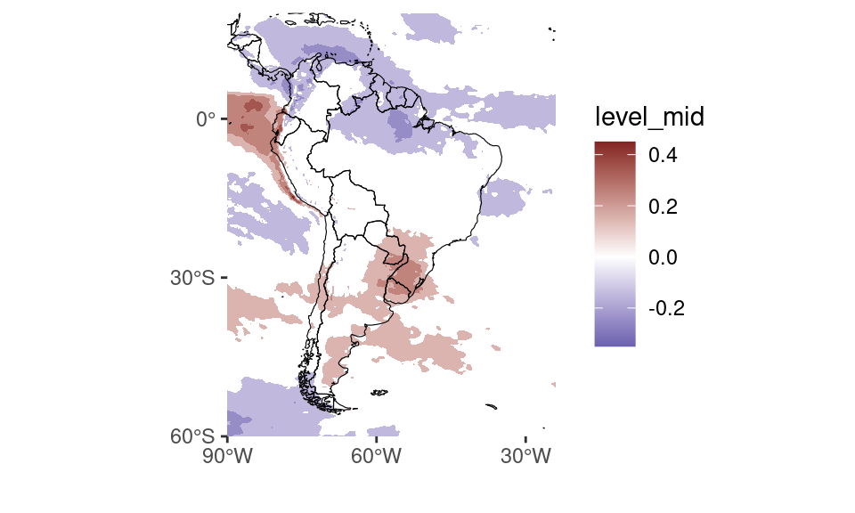
Como se ve, el índice de ENSO es un buen predictor de la precipitación en la región al rededor de Uruguay.